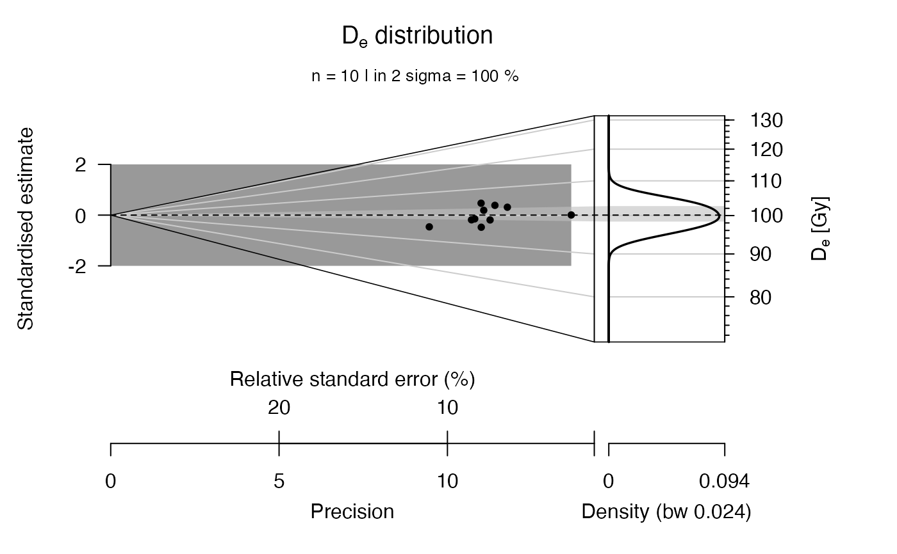

R/calc_gSGC_feldspar.R
calc_gSGC_feldspar.RdImplementation of the gSGC approach for feldspar MET-pIRIR by Li et al. (2015)
calc_gSGC_feldspar(
data,
gSGC.type = "50LxTx",
gSGC.parameters,
n.MC = 100,
plot = FALSE
)data.frame (required): data frame with five columns per sample
c("LnTn", "LnTn.error", "Lr1Tr1", "Lr1Tr1.error","Dr1")
character (with default): growth curve type to be selected
according to Table 3 in Li et al. (2015). Allowed options are
"50LxTx", "50Lx", "50Tx", "100LxTx", "100Lx", "100Tx", "150LxTx",
"150Lx", "150Tx", "200LxTx", "200Lx", "200Tx", "250LxTx", "250Lx",
"250Tx"
data.frame (optional): an own parameter set for the
gSGC with the following columns y1, y1_err, D1
D1_err, y2, y2_err, y0, y0_err.
numeric (with default): number of Monte-Carlo runs for the error calculation
logical (with default): enables/disables the control plot output
Returns an S4 object of type RLum.Results.
@data
$ df (data.frame)
.. $DE the calculated equivalent dose
.. $DE.ERROR error on the equivalent dose, which is the standard deviation of the MC runs
.. $HPD95_LOWER lower boundary of the highest probability density (95%)
.. $HPD95_UPPER upper boundary of the highest probability density (95%)
$ m.MC (list) numeric vector with results from the MC runs.
@info
`$ call`` (call) the original function call
##TODO
0.1.0
Gray, H.J., Kreutzer, S., 2023. calc_gSGC_feldspar(): Calculate Global Standardised Growth Curve (gSGC) for Feldspar MET-pIRIR. Function version 0.1.0. In: Kreutzer, S., Burow, C., Dietze, M., Fuchs, M.C., Schmidt, C., Fischer, M., Friedrich, J., Mercier, N., Philippe, A., Riedesel, S., Autzen, M., Mittelstrass, D., Gray, H.J., Galharret, J., 2023. Luminescence: Comprehensive Luminescence Dating Data Analysis. R package version 0.9.23. https://CRAN.R-project.org/package=Luminescence
Li, B., Roberts, R.G., Jacobs, Z., Li, S.-H., Guo, Y.-J., 2015. Construction of a “global standardised growth curve” (gSGC) for infrared stimulated luminescence dating of K-feldspar 27, 119–130. doi:10.1016/j.quageo.2015.02.010
##test on a generated random sample
n_samples <- 10
data <- data.frame(
LnTn = rnorm(n=n_samples, mean=1.0, sd=0.02),
LnTn.error = rnorm(n=n_samples, mean=0.05, sd=0.002),
Lr1Tr1 = rnorm(n=n_samples, mean=1.0, sd=0.02),
Lr1Tr1.error = rnorm(n=n_samples, mean=0.05, sd=0.002),
Dr1 = rep(100,n_samples))
results <- calc_gSGC_feldspar(
data = data, gSGC.type = "50LxTx",
plot = FALSE)
plot_AbanicoPlot(results)
